O doutor é um alien que quando esta perto de morrer utiliza de uma
regeneracção para sobreviver, porem nesse processo o corpo e personalidade
dele muda, mas mantem as mesmas memorias e principios.
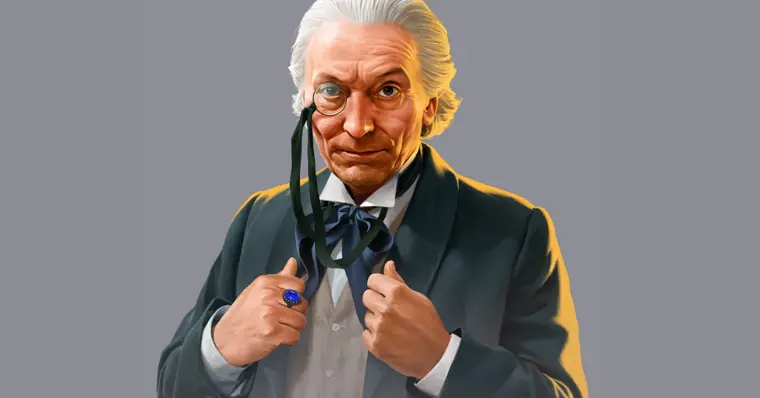
O Primeiro Doutor é descrito como um personagem inicialmente
problemático e arrogante, mas que amadurece ao longo de suas aventuras
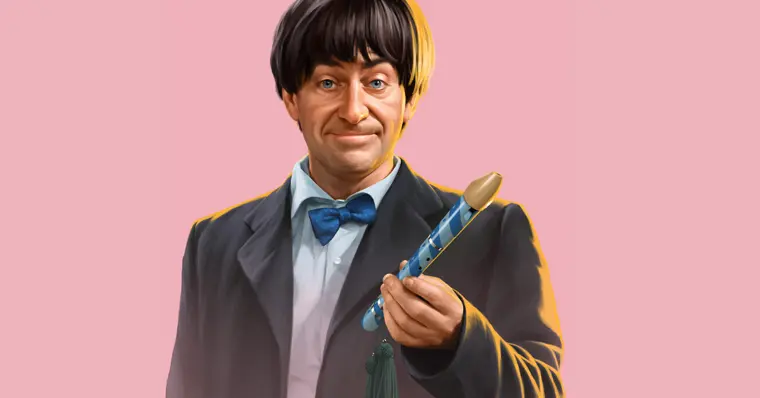
O Segundo Doutor é completamente diferente do Primeiro: é uma encarnação mais
jovem, mais engraçada e mais "biruta"
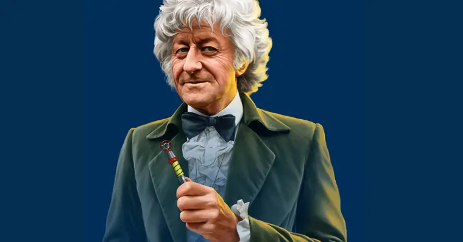
É uma encarnação mais atlética e ousada do Doutor, exilado na Terra e trabalhando
como assessor científico da UNIT, enfrentando alienígenas e mantendo uma rivalidade
emblemática com o Mestre.
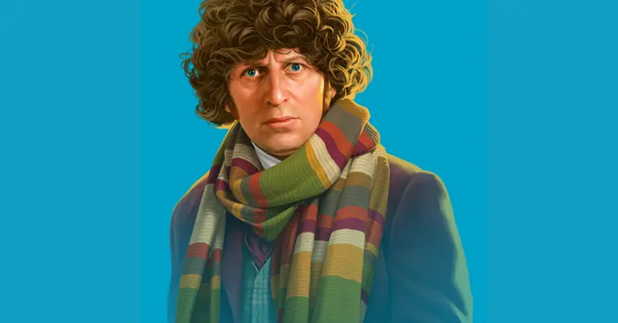
É uma das encarnações mais icônicas do Doctor Who, conhecido por seu cachecol colorido,
humor excêntrico e caráter aventureiro
É uma encarnação mais jovem e humanizada do Doutor. Ele demonstrou um interesse por coisas
relacionadas à Inglaterra Vitoriana e Eduardiana, como cricket e ciência.
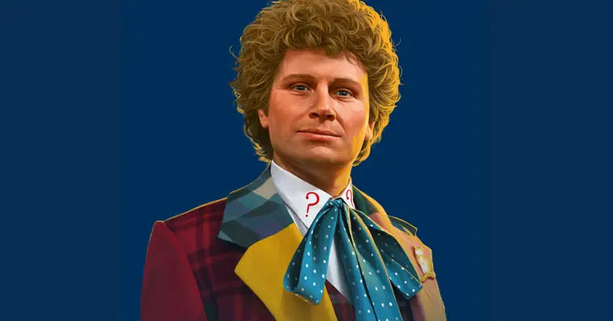
Inicialmente, sua personalidade é marcada por arrogância, teimosia e exagero, acreditando
ser superior a todos que encontra. Ele é dramático, direto e por vezes violento, sendo capaz
de ações extremas para resolver problemas ou proteger companheiros. Apesar disso, ao longo de
suas aventuras, mostra momento de compaixão e cuidado, revelando um lado emotivo e preocupado
com os outros
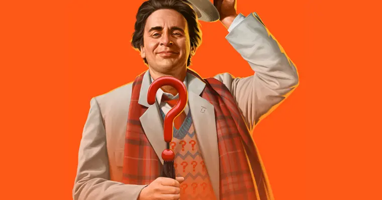
O Séptimo Doutor, interpretado por Sylvester McCoy, inicialmente se apresenta como um viajante
excêntrico, brincalhão e quase bufão, mas aos poucos revela sua natureza profunda, calculista e
estratégica. Ele se torna um manipulador astuto, usando seu intelecto para conduzir acontecimentos
em prol do "bem maior", muitas vezes tratando aliados e inimigos como peças num jogo de xadrez cósmico.
Apesar de sua postura sombria, mantém calor humano e afeição para com seus companheiros, especialmente
Ace, sendo ao mesmo tempo mentor e figura parental
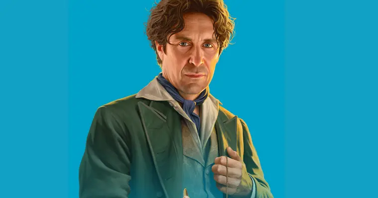
Ele é descrito como um homem charmoso, romântico e entusiasta, motivado pelo amor à exploração do universo.
Ele possui um senso de humor irreverente, e demonstra respeito e admiração pela vida em todas as suas formas,
especialmente pelos humanos. Embora seja generoso e direto, também apresenta momentos de auto-dúvida e cansaço
devido às suas intermináveis batalhas contra o mal
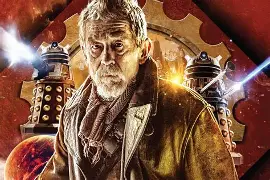
O Doutor da Guerra surge entre o Oitavo e o Nono Doutor. Durante a Guerra do Tempo, o Oitavo Doutor, após um
acidente no planeta Karn e após ser temporariamente ressuscitado pela Irmandade de Karn, escolhe se regenerar
em uma forma que agiria como guerreiro, aceitando abandonar o nome de "Doutor" para lutar na guerra contra os Daleks
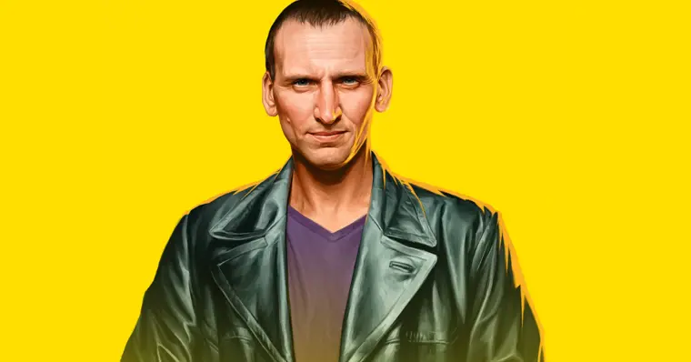
O Nono Doutor é um sobrevivente direto da Última Grande Guerra do Tempo, carregando trauma e culpa pelas consequências
seu envolvimento no conflito. Inicialmente, demonstra mau humor e tendência à vingança, como quando confronta o último
dalek, mas evolui ao longo de suas aventuras, tornando-se mais compassivo e protetor
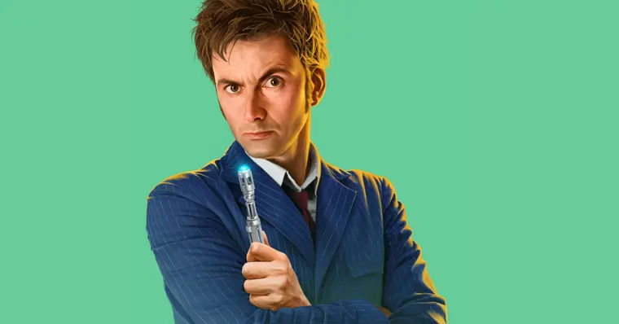
Ele exibe alegria, humor, irreverência e insolência, mas esconde raiva, arrependimento e melancolia causados pelo trauma da
Última Grande Guerra do Tempo. Ele é ferozmente protetor com aqueles que ama e pode ser implacável com seus inimigos, mantendo
sempre um código moral que combina compaixão com punição justa. É também um galã romântico
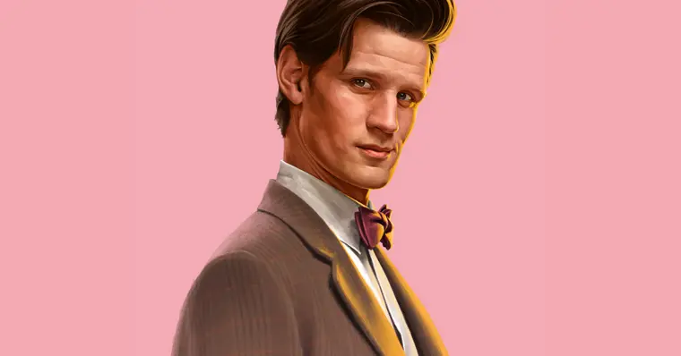
Ele é caracterizado por seu comportamento excêntrico e animado, falando rápido, gesticulando muito e misturando humor com momentos
sérios de reflexão. Ele é brilhante e engenhoso, muitas vezes usando a inteligência e o improviso para resolver problemas complexos.
Apesar de sua aparência juvenil, ele é extremamente inteligente e velho em experiência e sabedoria. Ele também demonstra empatia
profunda e senso de justiça, sendo protetor dos inocentes e sempre lutando contra injustiças cósmicas.
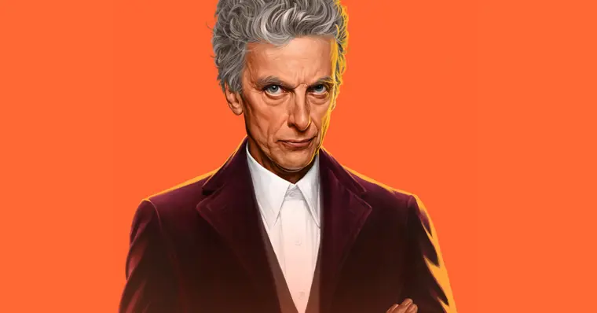
Ele a apresentar uma personalidade mais severa, direta e introspectiva, contrastando com o estilo jovial e excêntrico de decimo primeiro.
Ele é perspicaz, crítico, e frequentemente utiliza sarcasmo, mantendo uma profundidade emocional sutil que aparece em momentos de vulnerabilidade.
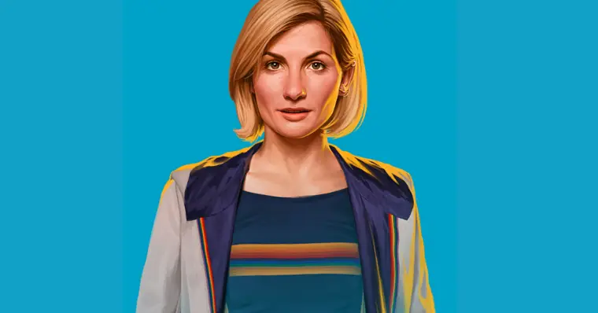
Ela é conhecida por sua bondade, esperança e compaixão, sempre disposta a ajudar aqueles que encontram dificuldades. Esta encarnação valoriza
fortemente a amizade e trabalha para resolver conflitos sem recorrer à violência, refletindo uma abordagem positiva e inspiradora para o público
Ele representa uma mistura de nostalgia, ação e inovação narrativa, conectando décadas de história de Doctor Who. Ele proporciona aos fãs antigos
e novos uma experiência única nos episódios especiais do 60º aniversário, mantendo a essência de aventuras, inteligência e heroísmo que caracteriza
o personagem
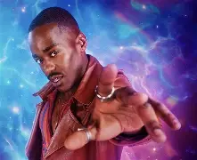
Essa encarnação do Doutor tende a ser mais leve, divertida e emotiva, lembrando um pouco o Décimo Doutor e o Décimo Primeiro Doutor, mas se destaca
por explorar um lado mais sombrio em momentos de pressão. Ele evita a crueldade desnecessária, mas, sob ativação de gatilhos emocionais como a
lembrança da Guerra do Tempo e a perda de Gallifrey pode agir de forma impulsiva ou agressiva, como demonstrado em episódios como "The Interstellar
Song Contest"